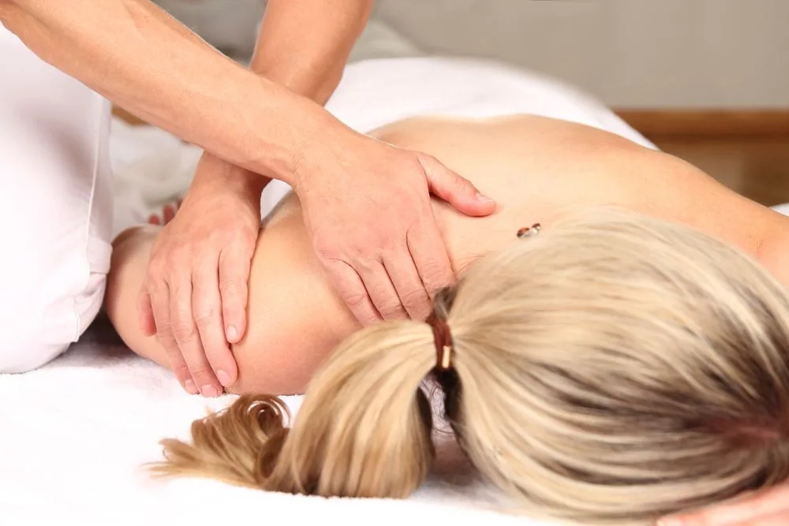
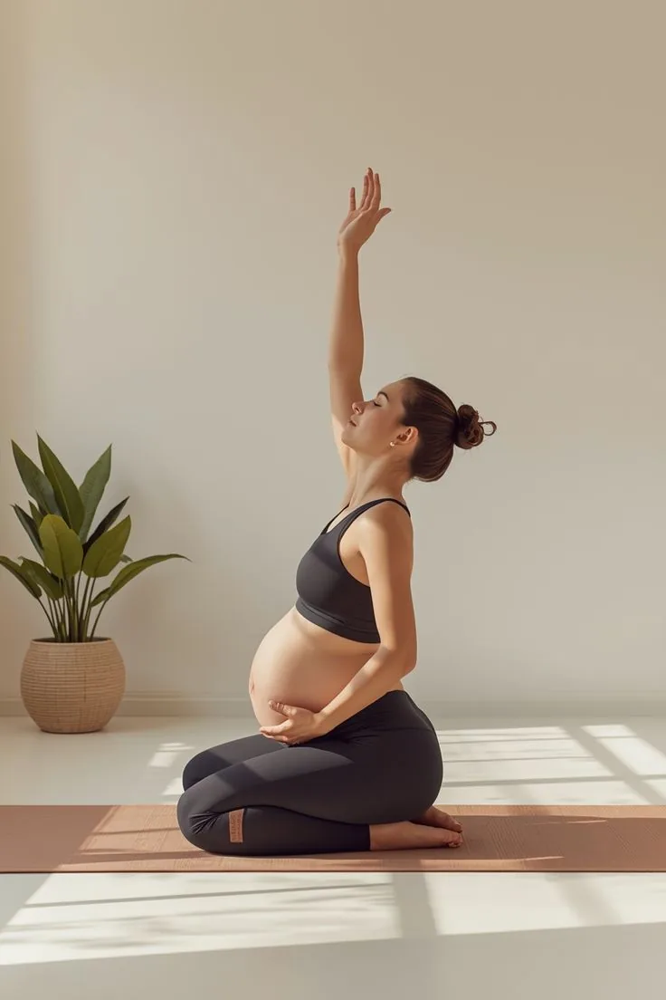

Soins & Spécialités
Ce que je traite
Une prise en charge adaptée à chaque situation, pour chaque tranche d'âge.

01
Douleurs du dos & cou
Lombalgies, cervicalgies, sciatiques, hernies discales.

02
Sportifs & blessures
Entorses, tendinites, récupération, performance sportive.
03
Pédiatrie & nourrissons
Plagiocéphalie, coliques, troubles du sommeil.

04
Grossesse & post-partum
Suivi ostéopathique tout au long de la grossesse.
05
Céphalées & migraines
Maux de tête, vertiges, troubles de l'équilibre.

06
Troubles digestifs
Reflux, colon irritable, constipation, ballonnements.